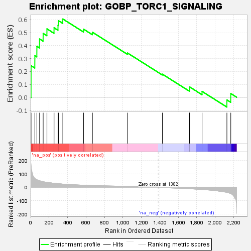
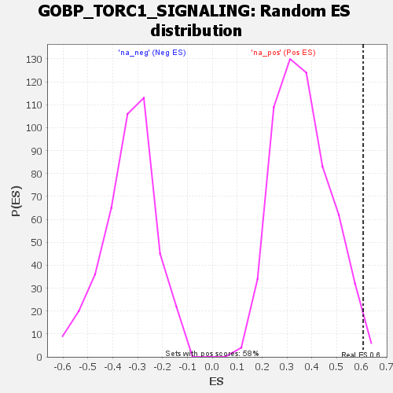

| Dataset | rank |
| Phenotype | NoPhenotypeAvailable |
| Upregulated in class | na_pos |
| GeneSet | GOBP_TORC1_SIGNALING |
| Enrichment Score (ES) | 0.60607165 |
| Normalized Enrichment Score (NES) | 1.6679003 |
| Nominal p-value | 0.0102739725 |
| FDR q-value | 0.42110127 |
| FWER p-Value | 0.999 |

| SYMBOL | RANK IN GENE LIST | RANK METRIC SCORE | RUNNING ES | CORE ENRICHMENT | |
|---|---|---|---|---|---|
| 1 | SAR1B | 5 | 174.041 | 0.2444 | Yes |
| 2 | MAPK3 | 46 | 67.413 | 0.3218 | Yes |
| 3 | RPTOR | 68 | 57.783 | 0.3942 | Yes |
| 4 | TBC1D7 | 97 | 49.273 | 0.4514 | Yes |
| 5 | CASTOR2 | 136 | 42.296 | 0.4942 | Yes |
| 6 | AKT1S1 | 177 | 37.772 | 0.5297 | Yes |
| 7 | PELI1 | 254 | 30.092 | 0.5380 | Yes |
| 8 | LAMTOR1 | 297 | 26.777 | 0.5570 | Yes |
| 9 | KLHL22 | 302 | 26.672 | 0.5929 | Yes |
| 10 | SRC | 349 | 23.916 | 0.6061 | Yes |
| 11 | LAMTOR3 | 574 | 15.675 | 0.5272 | No |
| 12 | CASTOR3P | 670 | 13.508 | 0.5034 | No |
| 13 | GPR137C | 1050 | 7.317 | 0.3427 | No |
| 14 | SESN3 | 1428 | -4.542 | 0.1789 | No |
| 15 | RPS6KA1 | 1722 | -11.853 | 0.0634 | No |
| 16 | RHEBL1 | 1723 | -11.854 | 0.0802 | No |
| 17 | STAMBPL1 | 1858 | -18.084 | 0.0453 | No |
| 18 | UBE2N | 2127 | -38.959 | -0.0204 | No |
| 19 | PRKAA1 | 2169 | -47.882 | 0.0289 | No |
